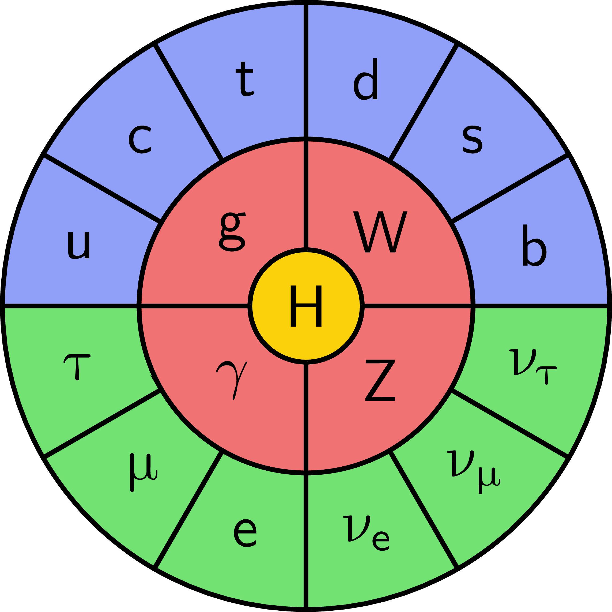
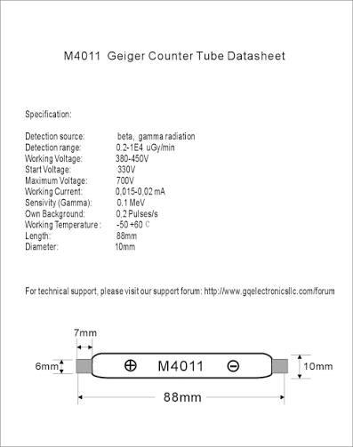
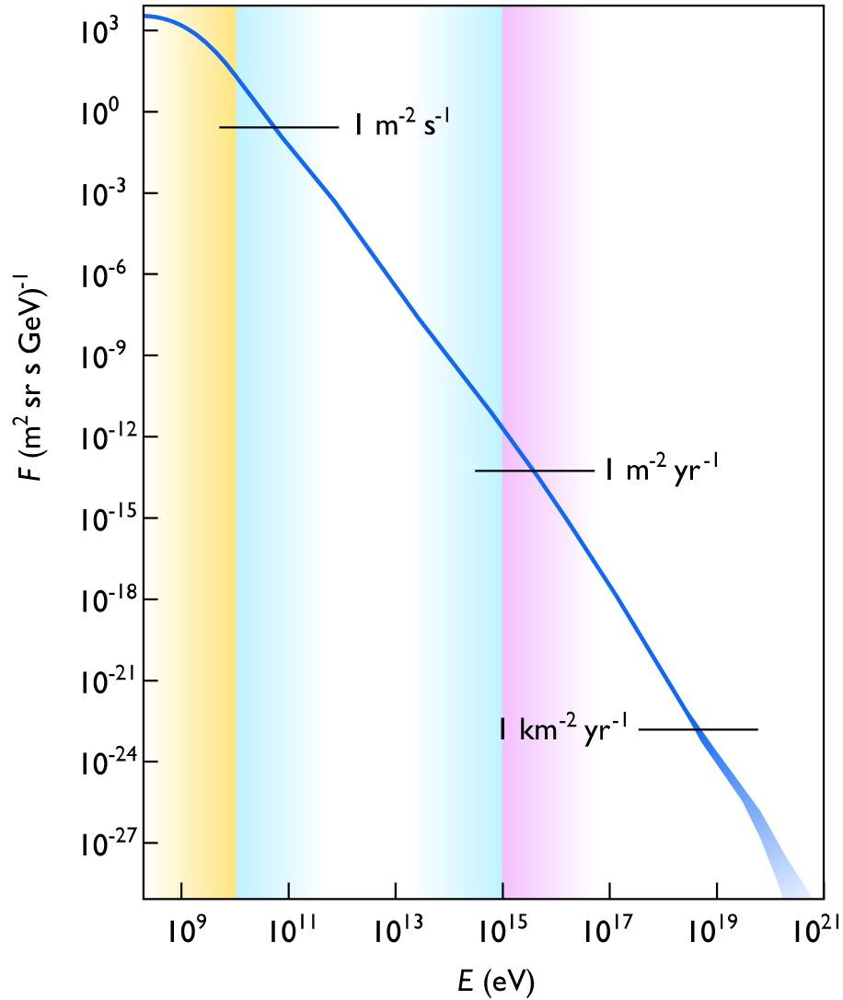
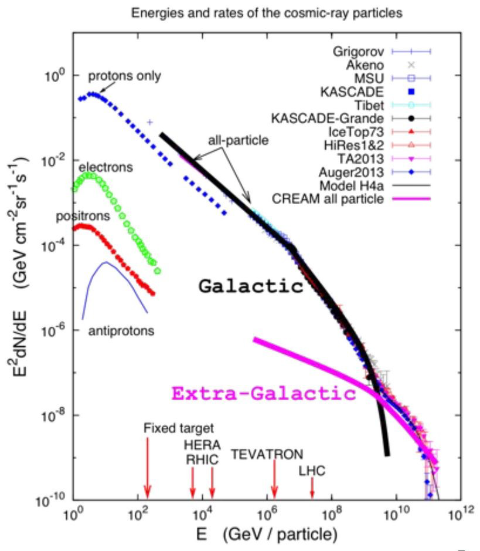
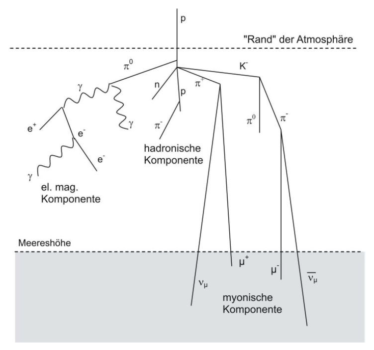
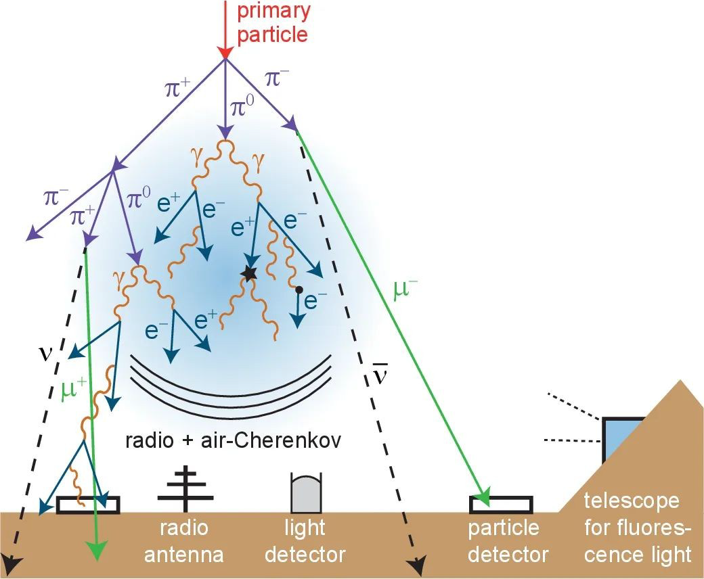
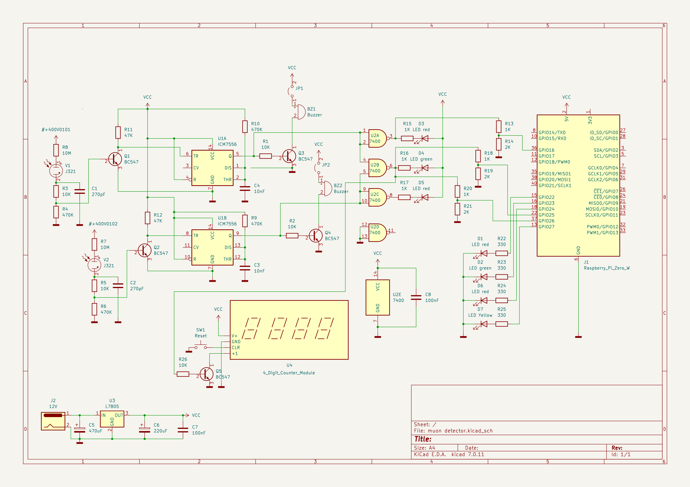
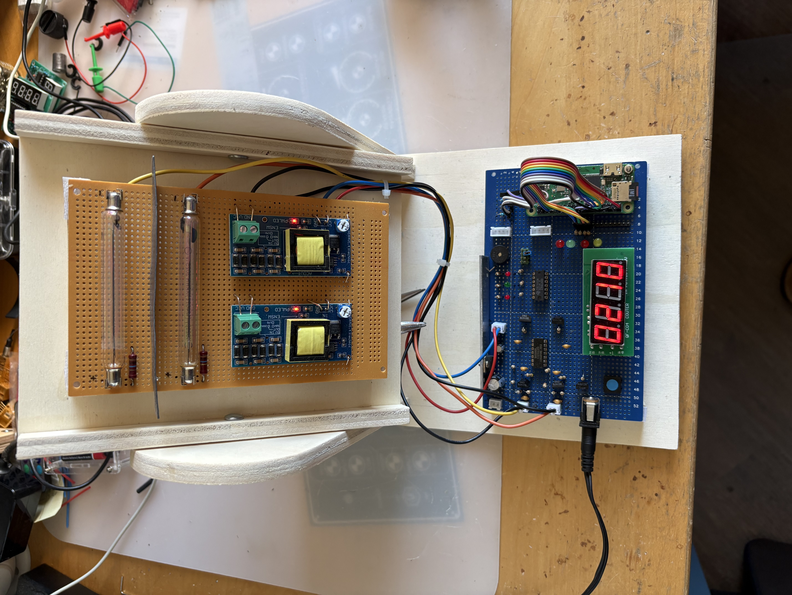

This article gives background information on the muon elementary particle generation in the atmosphere through cosmic radiation, describes the construction of a homemade muon detector. and presents some first measurement results obtained.
Before the discovery of the muon in 1836 by Carl Anderson and Seth Neddermeyer, physicists believed they had understood the building blocks of the universe: the world seemed to consist only of protons, neutrons, electrons and photons. This was all the physicists of that time needed to construct the known elements of the complete periodic system.
Muons were first discovered by American physicists Carl D. Anderson and his student Seth Neddermeyer at Caltech in 1936 while they studied cosmic radiation using a cloud chamber . The famous phrase "Who ordered that?" was a quip made by Nobel laureate and physicist Isidor Isaac Rabi. He said it because the muon behaved like a heavy version of the electron, but physicists did not expect or predict another particle like it at the time.
Anderson and Neddermeyer observed highly penetrating particles that were not electrons or protons, leading to the identification of muons. They are highly unstable particles, and they undergo a process called muon decay. When a muon decays, it transforms into an electron, along with two types of neutrinos.
Muons are continually produced in Earth’s atmosphere by cosmic ray collisions, approximately 15 kilometers above the Earth’s surface. These high-energy particles, predominantly protons and other atomic nuclei collide with the nuclei of atmospheric gases, resulting in the creation of muons.
Muons travel toward Earth at speeds reaching up to 99% of the speed of light. Given their fleeting existence, one would expect them to cover only a few meters before decaying. The intriguing question arises here: How do scientists manage to detect them on Earth, considering their short lifespan?
Surprisingly, much like neutrinos, muons are ubiquitous, continually passing through our bodies at around a thousand times per minute. This feat made scientists wonder how they were able to accomplish this seemingly impossible journey, surpassing their own lifespan in the distance traveled.
The Standard Model of particle physics is the theory describing three of the four known fundamental forces (electromagnetic, weak and strong interactions – excluding gravity) in the universe and classifying all known elementary particles. It was developed in stages throughout the latter half of the 20th century, through the work of many scientists worldwide [1], with the current formulation being finalized in the mid-1970s upon experimental confirmation of the existence of quarks. Since then, proof of the top quark (1995), the tau neutrino (2000), and the Higgs boson (2012) have added further credence to the Standard Model. In addition, the Standard Model has predicted with great accuracy the various properties of weak neutral currents and the W and Z bosons.
1.

In this model, the muon is an elementary particle classified as a second-generation charged lepton, main properties;
Charge; negative ().
Spin of (Fermion).
Mass: About 207 times more massive than an electron ().
Lifespan: Unstable, with a mean lifetime of about 2.2 s before decaying into an electron and two neutrinos.
Origin: Formed naturally when cosmic rays strike Earth’s upper atmosphere, or artificially in particle accelerators.
In contrast to other related projects, this muon detector uses two M4011/J321 type Geiger-Müller counter tubes, see Figure 2.

These tubes are readily available from a a number of sources and are quite cheap. However, because of the transparent glass tubes they are quite sensitive to visible light, which calls for a shield against stray light during measurements. We used shrink tubes as stray light protection.
These tubes have an active length of approximately 90 mm and a diameter of 10 mm, with a spacing of 38 mm between them. This configuration yields an angular resolution of approximately 30 degrees (in one direction). To virtually eliminate natural radiation (beta and gamma) via the TTL coincidence circuit, a 1mm thick lead shielding plate is positioned between the two tubes. Cosmic radiation—specifically secondary particles (namely muons) generated by collisions with atmospheric atoms—possesses sufficient energy to penetrate both tubes, unlike the gamma radiation from natural radioactivity. Consequently, they trigger ionization in both tubes almost simultaneously, an event the coincidence circuit can register. Since the angle of incidence of the cosmic radiation influences the recorded flux rate, the detector’s elevation can be adjusted to verify this effect.
Cosmic radiation intensity is highest for vertical incidence into the Earth’s atmosphere and drops to practically zero for horizontal incidence. The electronics system is designed to detect and count simultaneous ionization events within the counter tubes (including display). This requires a coincidence circuit and a micro-controller circuit; the latter counts the events and transmits the data to an Internet service (ThingSpeak, www.thingspeak.com).
Pulses from both counter tubes are counted by the micro-controller over 60-second intervals and transmitted to the service. Coincidence events are also counted and transmitted to the PC every 60 seconds. Interestingly, the count values of the individual counter tubes serve as a measure of the natural background radioactivity.
Cosmic radiation consists of high-energy particles originating from space. Earth—and indeed every other body—is constantly traversed by cosmic particles. The nature of cosmic radiation is highly diverse, spanning an energy range of 14 orders of magnitude. Cosmic radiation originates from the Sun, other stars, novae, supernovae, galaxies, and quasars 3.

Figure 3 shows the flux rate of cosmic rays as a function of particle energy. Different areas are highlighted in color to indicate the celestial bodies from which the cosmic rays predominantly originate. Yellow: Sun, Blue: Galaxy (Milky Way), Violet: intergalactic sources such as quasars.

Figure 4 shows which particles enter the Earth’s atmosphere and produce secondary particles. The Figure also shows which instruments are used for detection and which research facilities operate in which energy ranges.
On average, every second a particle strikes an area of one square centimeter of the Earth’s surface. Most cosmic particles arriving at Earth are secondary products of particle showers formed by primary particles through interactions with atoms in the atmosphere of Earth, typically in a cascade beginning with a single high-energy particle.
Outside of the atmosphere of Earth, primary cosmic particles consist mainly of protons and alpha particles (99%) with a small amount of heavier nuclei ( 1%) and an extremely small proportion of positrons and antiprotons. Once in the atmosphere of Earth, these particles interact with the nuclei of atmospheric molecules, forming new particles in a cascade process that moves forward, called secondary cosmic rays.
The composition and energy spectrum of primary cosmic rays have been extensively studied. The flux of hydrogen is slightly higher than 90%, slightly less than 10% helium, for lighter elements such as Li, Be, and B, and for other elements such as C and Ne.
The energy spectrum follows a power law in the following form: where for an energies less than eV.

When measuring cosmic radiation, a distinction can made between different components. The detector presented here is designed for specifically measuring the muonic radiation component. Other detector concepts are designed to register radio or visible radiation like air-Cherenkov 6, showing which types of detectors can be used today for recording cosmic radiation events.

Secondary radiation at sea level consists of two components (soft and hard), which behave differently when passing through very dense materials like iron or lead.
The soft component (approximately 30% of the secondary radiation), consisting of electrons and photons and a small fraction of protons, kaons, and nuclei, can only penetrate a few centimeters.
The harder component (approximately 70%), consisting of muons, can penetrate absorbing materials several meters thick.
The average particle flux that makes up cosmic rays reaches, at sea level, estimated:
The flux of cosmic rays is a function of the angle to the perpendicular of the Earth’s surface and is described by:
The particles that make up cosmic rays have high energy. It is estimated that the average flux at sea level has an average energy of 3 GeV. The muon, the main component of secondary cosmic rays, is an elementary particle with a spin of ½ and a mass of . As mentioned above, muons are mainly produced in the upper atmosphere by the decay of pions:
During production, muons have relativistic velocity, and due to time dilation (theory of relativity), they can reach the ocean surface, where they can be observed, despite their short lifetime. particles are about 20% more abundant than particles.
This chapter describes the results obtained with the coincidence detector apparatus presented here. The measurements were carried out at different times of day, and for different angles.
The integration time was assumed to be 3600s: Sensor area = Maximum theoretical flux = (0.01 x 9) x 60 = 5.4 cpm (counts per minute)
ToDo: more measurement results...
Here, the geometric acceptance and the expected coincidence count rate for a particle telescope consisting of two identical, parallel, stacked Geiger-Müller tubes of type J321 (M4011) are calculated.
Due to the cylindrical geometry, the field of view (the solid angle) differs dramatically along the two principal axes.
transverse axis:
lateral axis:
Since the distance is of the same order of magnitude as the tube length , the point-source approximation () yields an inaccurate value. For parallel cylinders in the near field, the integral is approximated analytically using the intersection of the solid angles:
The mean integrated muon flux at sea level is approximated as for this geometry. The expected coincidence rate per second (Hz) is calculated as follows:
Converted to the unit commonly used for Geiger counters Counts per Minute (cpm):
With a measured background rate of, for example, With per individual tube and an electronic coincidence gate time of , the rate of the spurious signals is:
Since , the chosen value for is sufficiently small to keep the signal-to-noise ratio stable.
The simple Double Geiger Counter circuit 7 includes tow high voltage drivers producing the 350-480V DC anode voltage for the Geiger Müller tubes. For normal operation the high voltage do not need to be stabilized, so several volts drifts will not affect the results, since the voltage is in tube plateau. Since Geiger tube consume only several uA, it also does not need any large capacitors. The Pulse registration circuit stage is build with a standard transistor and an ICM7556 yielding two 555 timer cirbuits. Each 555 circuit represents a monoflop acting as pulse stretcher for the subsequent Raspberyy Pi circuit registering the produced pulses via GPIO I/O. Additionally, a simple SN7400 NAND TLL circuit serves as a pulse coincidence registration scheme.

The completed detector setup including Geiger Müller tube holder wither high-voltage power supplies, and the counter circuit with coincidence detector is shown in Figure 8
